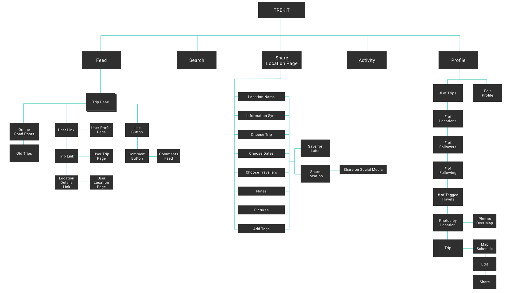
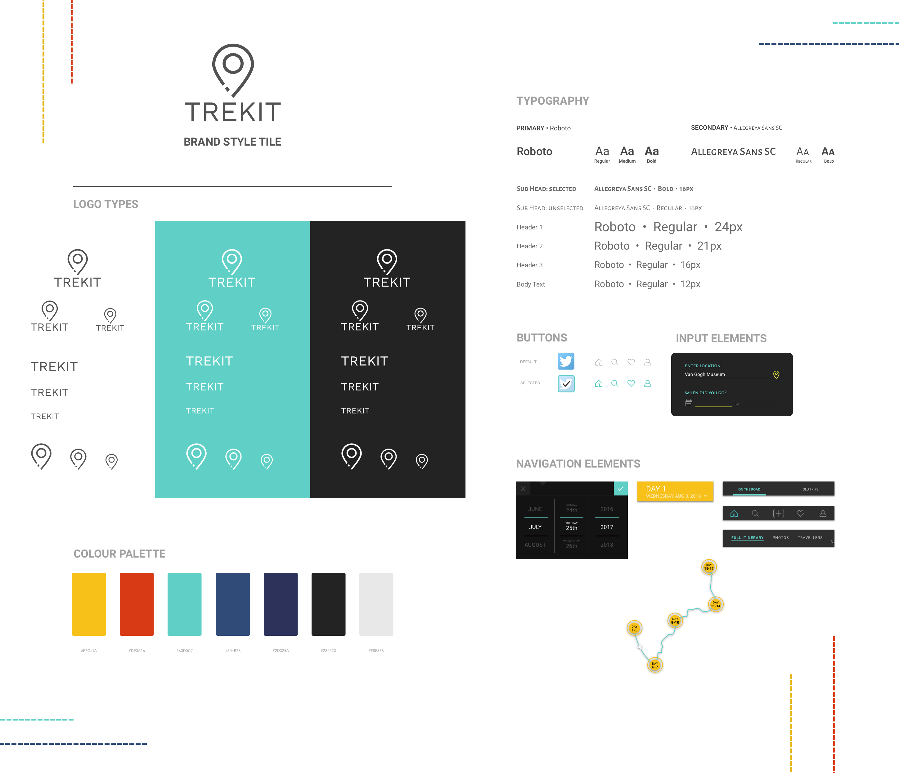

A social app that shares and stores memories created from your favourite trips.
Target User
Tech-savvy explorers who want to remember their travels around the world.
Goal
To create a bucket full of memories for travellers that also allows for quick and easy sharing to family and friends.
My Role
User Experience Designer, Visual Designer
Research
User Interviews
Strategy
Personas
Empathy Map
Customer Journey Map
How Might We
Crazy Eights
Site Map
Userflow
Sitemap
Information Architecture
Interaction Design
Wireframes
Prototyping
Usability Testing
User Interface Design
Style Guide
UI Kit
High-Fidelity Prototype
Summary
With a focus in travel documentation, I discovered through empathy research that a large portion of travellers had trouble remembering their trips.
So the main question I had to asked myself: How might I help travellers remember their trips and share them?
Answering this question, I have designed a travel sharing and collection app that eliminates the stressful middleman (users’ memories) and brings the trek information right into the users’ hands.
-
Process
-
Research
USER INTERVIEWS
In order to gather quality data, I conducted empathy research with individuals who had gone on a vacation trip for more than 14 days. This length of time means that the traveller had stayed there for a good length of time to explore elsewhere.
Through my interview story-telling format, I’ve discovered that travellers share the following: locations, activities, pictures, duration of the trip, and who they went with. And sometimes, they’d ask for recommendations/tips.
Another discovery I’ve made was that many users had trouble remembering what they did on the trip. Many of them had to check on social media accounts, mainly Instagram, to remember.
"
I use social media to update my friends and family to let them know I’m safe and that I'm having fun.
"
My friends are always wanting to see pictures.
"
I’d sometimes pull out the map app when I share my travels, so it gives my friend a better idea of where I went.
Strategy
PERSONA
I’ve combined all my findings from the user research to create a provisional persona: Stephanie Powell.
She is an energetic, tech-savvy adventurer who loves to experience different cultures. She wants to record all her travels through pictures and notes to encourage everyone to be active and explore the world.

CUSTOMER JOURNEY MAP
This map includes the thoughts he has, his positive/negative emotions, as well as the location he is in every time he makes an action.

HOW MIGHT WE...
Fifteen “How Might We” statements were carefully thought out to capture all the problems that arise when the traveller wants to share their trip.
How Might We...
...allow travellers to update their friends/family?
...help travellers remember their trip years from now?
...allow travellers to share with other travellers?
CRAZY EIGHTS
Taking the “How Might We” problem statements, I moved onto a brainstorming exercise that opened my creative outlet to explore different options that solved these statements.

After brainstorming many ideas, I’ve decided to focus on designing for the mobile. The reason for this was to allow on-the-go travellers to quickly update their friends and family through their pocket device.
USERFLOW
Focusing on the trip sharing userflow allows me to utilize the data collected from user research. This includes locations, activities, pictures, duration of the trip, and who they went with.
Interaction Design
MID-FIDELITY WIREFRAMES
Mid-Fidelity wireframes were built in Sketch for the screens necessary to complete the userflow.
PROTOTYPING: MID-FIDELITY WIREFRAMES
These wireframes were used to create a prototype with Marvel for usability testing. The tests were conducted remotely with three users.
The users were given a scenario and task to complete:
You are a traveller who had just come back from a month-long trip in Singapore. You want to document your travels. How would you go about this?
Notes were taken as they spoke their thoughts.
"
What’s the difference between Trip and Location?
"
I can barely see the images and text [on the homescreen].
"
Where is the share button?
INFORMATION ARCHITECTURE
After the user testing, I caught an Information Architecture issue that was missed in the Strategy phase.
A number of users were confused by the usage of similar terms in different areas I was using on the wireframes. This included: trip, location, destination and journey.
Ridding of the confusion, I narrowed it down to two terms: Trip and Location.
I was able to clarify both terms through a visual representation and a sitemap.
User Interface Design
BRAND STYLE GUIDE
The brand was created for Trekit is one that represents excitement, curiosity, individuality, and adventure.
The colour palette was chosen to represent the four values.

HIGH-FIDELITY WIREFRAMES
The user testing on the mid-fidelity wireframes enabled me to discover an information architecture problem involving taxonomy.
The main goal for iterating my wireframes was to solve the IA problem through consistency in my terms regarding Trip and Location. This was corrected while I was creating my high-fidelity wireframes.
I’ve created numerous iterations to achieve the dark theme wireframes on the right. I have chosen to focus on the dark theme due to its powerful impact on photos, allowing them to pop out at the user.
Check out the some iterations below following the brand style guide.
PROTOTYPING: HIGH-FIDELITY WIREFRAMES
Due to the taxonomy problem occurence, I decided to validate the IA through another round of user testing.
Through this, I found that no users had problem distinguishing the difference between Trip and Location.
However, some users had interesting questions that that sparked my interest in solving.
"
Can I not edit the post on the homescreen?
"
How come the date was selected for me?
"
Is there a way to search for the traveller rather than scroll right infinitely?
UPDATED: HIGH-FIDELITY WIREFRAMES
After the high-fidelity prototyping, I was able to translate the users’ questions into problems, which allowed me to make necessary adjustments to my high-fidelity wireframes for a better user experience.
Through this, I found that no users had problem distinguishing the difference between Trip and Location.
-- Reflection --
This passion project was built out of pure curiousity and my love to travel. It was daunting at first, as there are currently no apps that solely focuses on the remembering and sharing of travel memories. However, at each step of the way, it continued to excite me through new design decisions I’ve never encountered.
Looking back at the project, I’ve realized the importance of user testing. They tell us something that us, designers, cannot think or see. Ultimately, I’ve learnt to open both my eyes and ears to absorb what users really need and provide them with the best option.
Continuing on, I would translate the mobile version into a desktop version, as it is beneficial for those who edit their travel photos on their desktop devices. I, also, plan on fully executing Trekit with a developer to bring travel memories to our hands.
_______